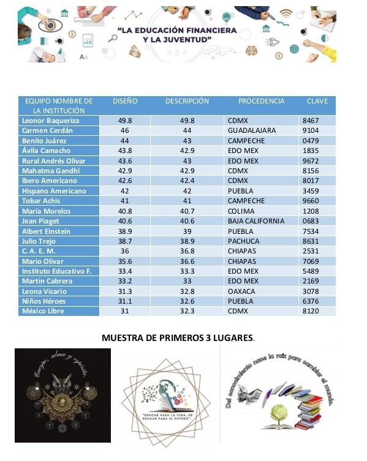

ANEFF
Asociación Nacional De Educación Financiera Fractal
Documento Oficial • 15 de Mayo de 2026
"Recordar es volver a pasar por el corazón el pulso del universo™"
Raíces de Transformación: El Orgullo de Nuestro Origen
Con profunda emoción celebramos hoy el 5to aniversario de ANEFF. Miramos con orgullo aquel 2021 donde, inspirados por la visión transformadora del Presidente Andrés Manuel López Obrador, sembramos una semilla de cambio que hoy florece junto a la Dra. Claudia Sheinbaum. Lo que comenzó como un sueño de justicia social, hoy se consolida a través de la Nueva Escuela Mexicana, convirtiendo la ciencia y la tecnología en patrimonio del pueblo.
Hoy, ese esfuerzo rinde su fruto más trascendental: el pensamiento fractal ya es una realidad en los libros de texto de 3er grado de primaria. Ver la Tecnología Fractal integrada oficialmente en la educación básica de México es el mayor testimonio de nuestra sintonía con la SEP. Estamos forjando soberanía digital desde la infancia, integrando la criptoeconomía y el humanismo como pilares de una nueva autonomía nacional.
Nuestra gratitud eterna a la Institución Primaria Leonor Baqueriza, cuna y testigo de nuestro nacimiento. Gracias al premio entregado, sus aulas hoy son espacios de vanguardia equipados con laptops y proyectores, honrando aquel primer paso que nos permitió demostrar que la tecnología es un derecho, no un privilegio.
Próximamente, realizaremos una visita oficial a la institución para presentar los avances del Proyecto ANEFF. Será un honor recorrer nuevamente esos salones, ahora equipados, para recoger la experiencia de los profesores y reafirmar que nuestro corazón sigue donde todo comenzó.
"En este devenir histórico, honramos la profundidad de la enseñanza como el acto más puro de soberanía. Nuestra gratitud se extiende a los docentes, custodios del intelecto y la espiritualidad de la nación, cuya labor trasciende la instrucción para convertirse en un abrazo reflexivo a la mexicanidad."
Jesús Antonio De León Reyes
Presidente y Fundador
